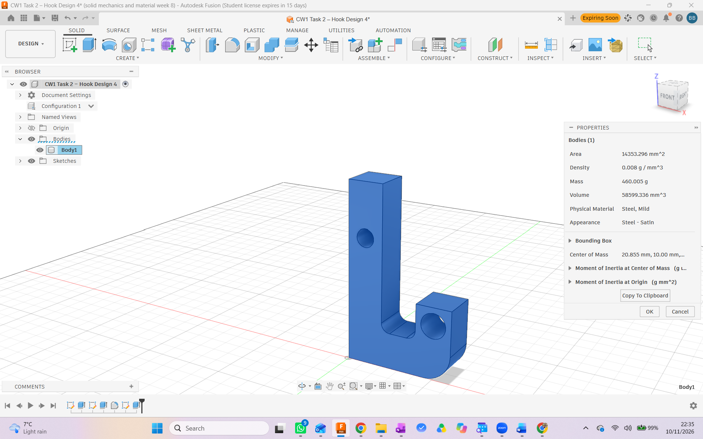
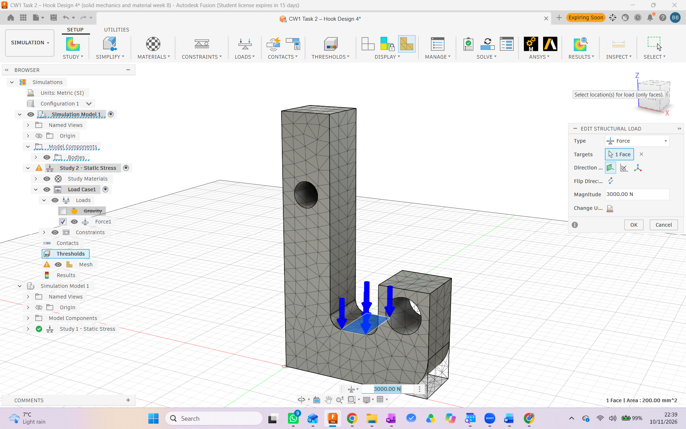
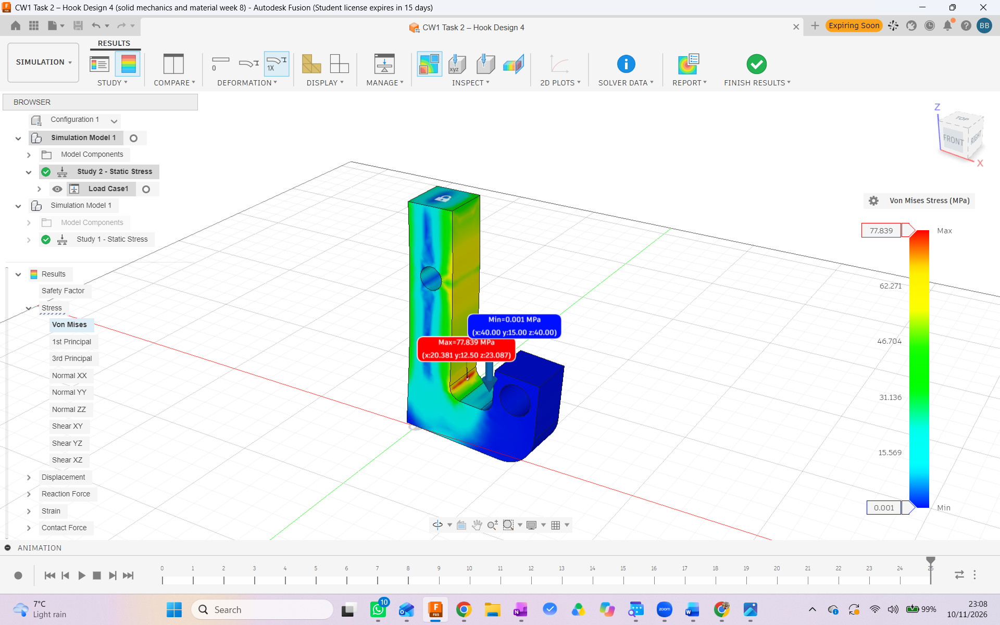
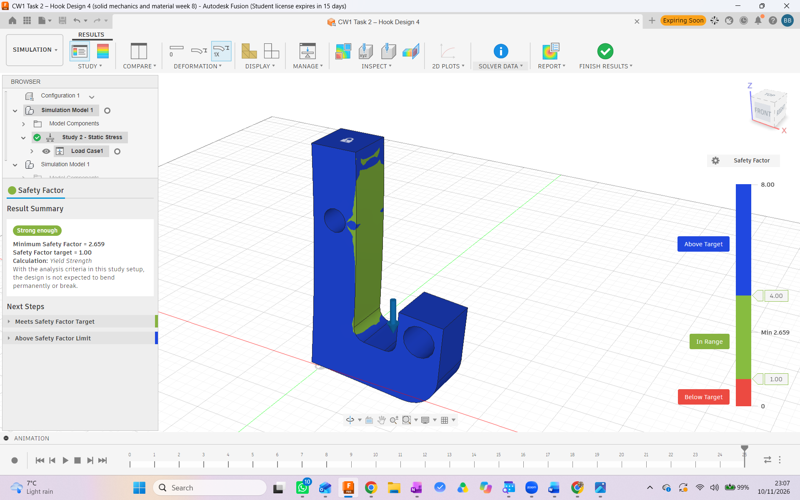

Lifting Hook Mass Optimisation
Four design changes reduced the hook from 504.085 g to 460.005 g. The selected design retained the raised lip and satisfied the coursework yield criterion under a 3000 N downward load.
Model and analysis setup
Geometry and material
- Study 1 mild-steel hook, initially 504.085 g
- Four iterations introduced holes in the short arm and upright and rounded the lower outside corner.
- Design 4 retained the load seat and raised lip. Enlarging the short-arm hole from 12 to 14 mm left 3 mm of steel above it.
Boundary conditions and mesh
- Fusion 360 static-stress study of the final design
- Top face of the upright fixed in all three translational directions
- 3000 N downward force applied to the 200 mm² load-seat face, with gravity disabled
Results and mechanical interpretation
The final hook weighed 460.005 g, saving 44.080 g (8.74%) from the Study 1 baseline. The final change to the short-arm hole accounted for 6.412 g of that saving.
The highest von Mises stress occurred at the inner fillet where the load seat meets the upright. The stress plot places the peak at this curved transition, away from the two holes.
Factor-of-safety check
Dividing the mild steel’s yield strength by the peak von Mises stress gives 207 MPa ÷ 77.839 MPa ≈ 2.659. This agrees with the Fusion result and exceeds the coursework target of 1.00 for this load case.
Fusion 360 evidence



